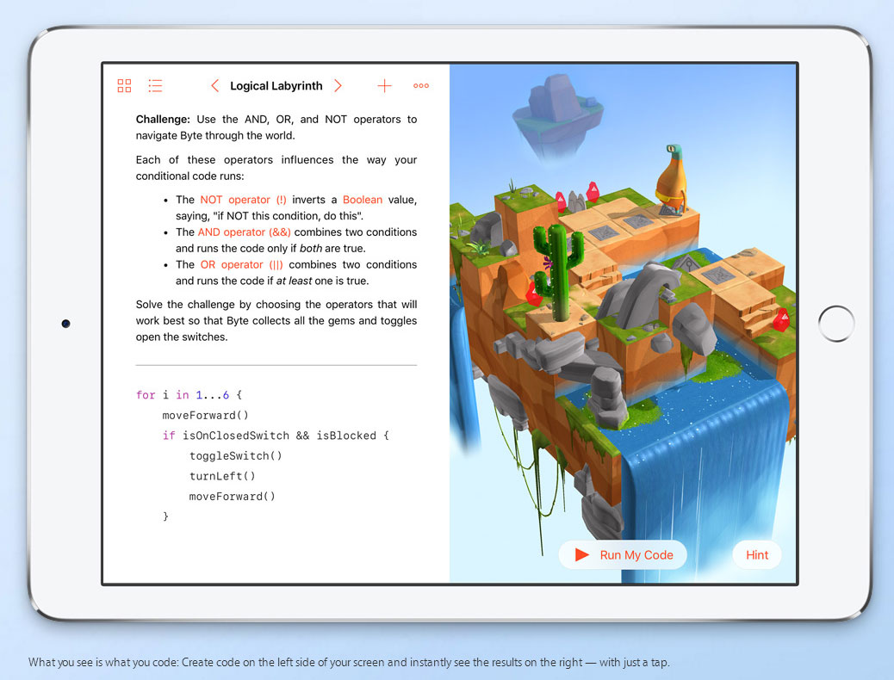
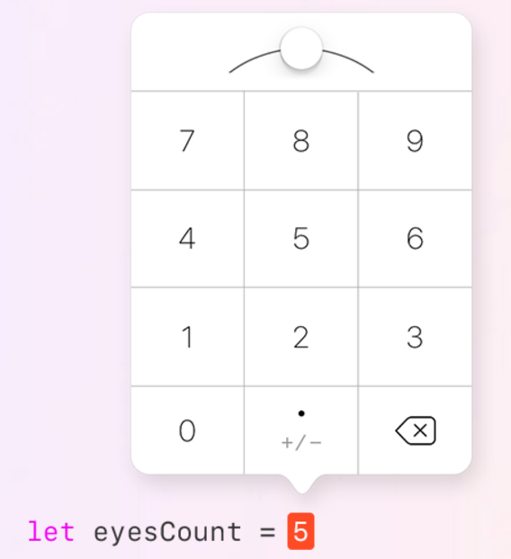
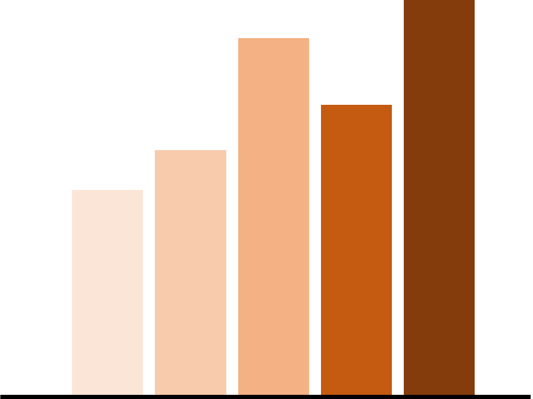

홈으로
디블로터
미래 자동차와 교통 혁명
오픈소스 기술 트렌드
최신기사보기
카카오, ‘카카오지하철’ 앱 출시
애플, 스위프트용 어린이 SW 교육 도구 공개
[디블로터] 어느 인포그래픽이 더 적절할까?
우버의 꼼꼼한 디테일, '우버 바이크'

우버는 자동차와 비행기, 헬리콥터는 물론 요트까지 그 영역을 넓혔다. 그리고 쉽게 생각하지 못했던 곳까지 사업 영역을 확장했다. 어쩌면 이건 북극에서 냉장고를 파는 것과도 비슷한데, 바로 암스테르담에서 런칭한 ‘우버 바이크’ 서비스다.

우버가 자전거를 빌려주는 것은 아니다. 자전거 이용자는 자전거를 실을 수 있는 장치가 붙어있는 차량을 호출할 수 있다. 역시 사람보다 자전거가 많은 암스테르담에서 가능한 서비스겠다. 자전거를 타다 지치거나 갑자기 비가 오는 등의 상황에서 이용할 수 있다. 당연히 이 서비스에도 우버 블랙과 우버X 등을 이용할 수 있다. 우버 바이크는 승차 위치를 선택할 때 옵션으로 지정할 수 있다. 다만 이 서비스는 우버X와 동일한 가격에 추가로 4유로가 따라 붙는다.
애플, 스위프트용 어린이 SW 교육 도구 공개

애플이 6월13일 열린 ‘세계개발자회의(WWDC) 2016’ 에서 ‘스위프트 플레이그라운드’를 공개하면서 소프트웨어(SW) 교육 시장에서 입지를 확대했다.

스위프트 플레이그라운드는 아이패드 앱이자 SW 교육 도구로, 프로그래밍의 기본 원리를 배울 수 있도록 도와준다. 소스코드를 입력해서 원하는 애니매이션 캐릭터를 움직이고 문제를 풀 수 있으며, 원하는 작품을 만들 수 있다. 소스코드는 직접 타이핑하는 것이 아니라 자주 사용하는 기능을 클릭하고 드래그하는 방식으로 입력할 수 있게 지원했다.
[디블로터] 어느 인포그래픽이 더 적절할까?

이번 주 디블로터 시간에는 인포그래픽에 대해 공부했습니다. 데이터과학이 너무 어렵다 보니 학습 의욕이 꺾이는 경우가 종종 생기더라고요. 하루를 써서 공부하는 만큼, 시간을 분배해 다양하게 배우면서 흥미를 유지하는 게 좋을거라는 판단이 들었습니다. 2주를 인포그래픽 문법에 할당했는데요. 책을 공부하다 보니 아는 것보다는 익히는 게 더 중요한 내용이라 정작 공부하는 데는 하루가 채 걸리지 않았습니다.

교재는 ‘인사이트’에서 나온 ‘월스트리트저널 인포그래픽 가이드’입니다. 저자인 도나 M. 윙은 인포그래픽 분야에서만 20년 이상 경험을 쌓은 베테랑입니다. <뉴욕타임스>, <월스트리트저널> 등 유수 언론사를 거쳤습니다. 이 책은 간결하고 명확하게 인포그래픽을 그릴 때 필요한 내용을 다루고 있습니다. 공부한 내용을 바탕으로 아홉 가지 사례를 꼽아봤습니다. 책에는 훨씬 풍성하고 알찬 내용이 담겨있으니, 추가로 더 알고 싶다면 책을 보셔도 좋습니다.